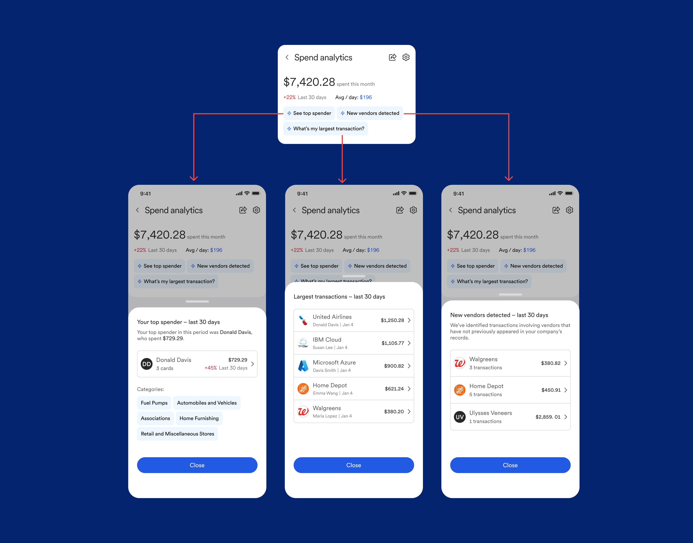

CREDIT CARDS B2B APP UX
This is a dashboard I designed at U.S. Bank to help business owners understand their unstructured spending, and make decisions. It's part of a larger product - which you can view here.
The overarching goals were to tie together features into an easy-to-digest dashboard with data we already had access to, and drive adoption of our premium subscription.
This project had a limited scope: the ask was to create a new dashboard feature using only existing assets. Those assets come in the form of unstructured transaction data, user actions, and card activity. Users were already able to download this info as Excel files, but this is a very manual and time-consuming way to process that data.
We combined that data into a digestible, easy-to-use, and shareable dashboard that displays what the user cares about most:
Actionable insights for their business
Alerts for bad spending behavior
Onboarding for useful features
To help narrow down the scope, we spoke to users. These were customers of U.S. bank, with an established use of a company cards for their employees. Interviews with them involved:
Understanding their role (CFO, owner, accountant, controller, etc)
Detailing their day to day
Identifying their goals and pain points
Asking about their existing tools (competitors)
When an insight is selected, the user can look for more info via a drawer: which in turn links out to other features in the platform.
Here's the mobile app prototype. Feel free to click around and look into the data! Press Z to resize the screen.
Not every project is a saga. This dashboard was an exercise in delivering a quick win with a tight team and limited assets: we did a quick calibration using user research, then delivered 2-3 months of design iteration before launching.
I learned about the day-to-day of business owners, and what red flags they look for—it turns out, a lot of the job is very manual! Truth be told, all this work can be done by scanning thousands of rows in Excel—the value added here is the time saved and overall convenience.